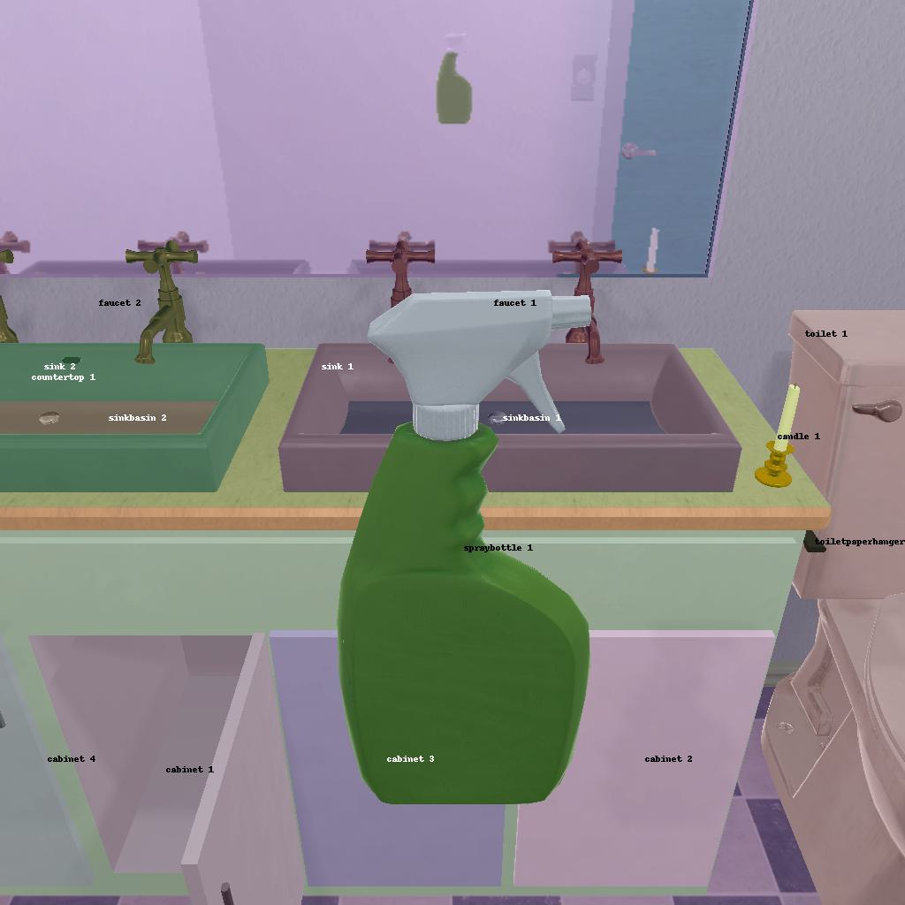
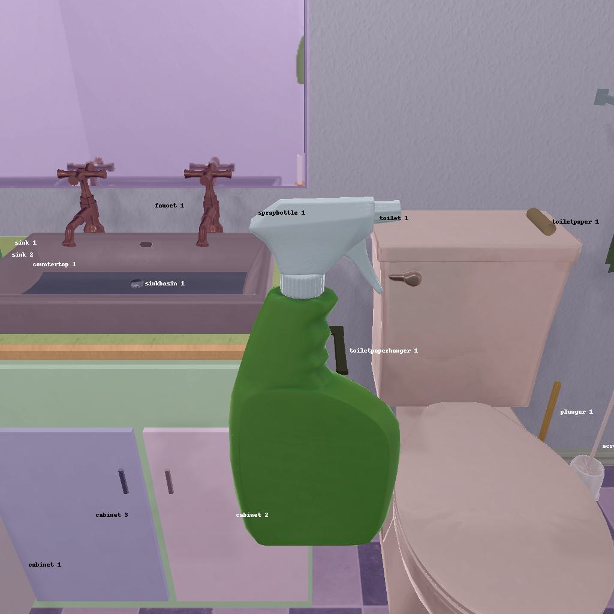

---------------------------------------------------------task: 9---------------------------------------------------------
--------------------------------------------------------------------------------------------------------------------------------------------------------------------
--------------------------------------------------------------------------------------------------------------------------------------------------------------------
Step:--------------------------------------------------------------------------16-------------------------------------------------------------------------------
----------------------------------------
VLM Prompt:
Image1:
Image2:
Image3:
**Instruction**
1. Analyze the provided image to identify all visible household objects, focusing on those relevant to the task description "put some soapbottle on toilet."
2. Use the analysis of the image and the task hint "The agent must find an object of the desired type, pick it up, find the correct location to place it, and put it down there." to answer the question: what is the most reasonable action in the choices for the task description "put some soapbottle on toilet"?
4. Decide and write the answer using the template: The answer is: (i): , where i is the real number. If there is no desired object in the image, search every place based on **Initial Observation** to find the object. And if no one is exactly correct, choose a similar answer.
**Initial Observation**
You are in the middle of a room. Looking quickly around you, you can see bathtub (1), bathtubbasin (1), toilet (1), cabinet (1-4), sink (1-2), countertop (1), sinkbasin (1-2), toiletpaperhanger (1), towelholder (1), garbagecan (1), handtowelholder (1)
**Answer Choices**
(1): go to bathtub 1
(2): go to bathtubbasin 1
(3): go to cabinet 1
(4): go to cabinet 2
(5): go to cabinet 3
(6): go to sink 1
(7): go to sink 2
(8): go to countertop 1
(9): go to cabinet 4
(10): go to sinkbasin 1
(11): go to sinkbasin 2
(12): go to toiletpaperhanger 1
(13): go to towelholder 1
(14): go to garbagecan 1
(15): go to handtowelholder 1
(16): put spraybottle 1 in/on toilet 1
(17): examine spraybottle 1
(18): examine toilet 1
**Answer**
Let's think step by step by following the instructions.
----------------------------------------
----------------------------------------
Original Response:
The task description is "put some soapbottle on toilet." First, we need to identify if there is a soap bottle in the images provided.
In Image 1, there are no soap bottles visible on the countertop, sinkbasins, or cabinets that are open.
In Image 2, there is a green spray bottle labeled "spraybottle 1" being held, but this is not a soap bottle.
In Image 3, the same green spray bottle is still being held, and again, no soap bottle is visible in the open cabinets or on the countertop.
Based on the initial observation, there are several cabinets that have not been checked. Since the visible areas do not contain a soap bottle, the next reasonable action would be to search the remaining cabinets.
The answer is: (9): go to cabinet 4.
----------------------------------------
----------------------------------------
>>> Refine Original VLM Response and Get Pure Action: go to cabinet 4
----------------------------------------
-----------------------------------------------------------------
Running time: 7.641384840011597 seconds
Total Money: 5.49234
-----------------------------------------------------------------
-----------------------------------------------------------------
Text Observation:You arrive at loc 9. The cabinet 4 is closed.
-----------------------------------------------------------------
UNSUCCEED